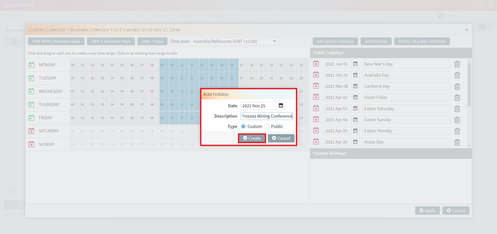
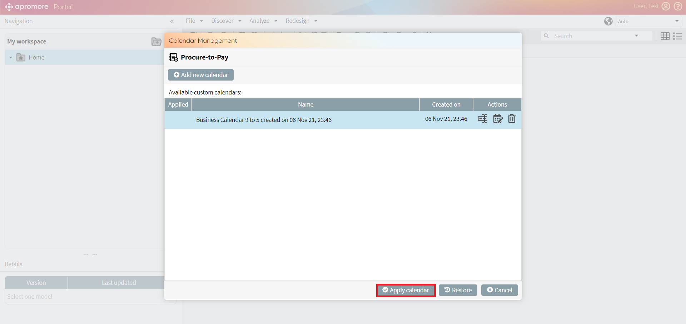

Manage calendars
Apromore allows to create and apply a calendar to a log. All the computations and execution times related to the selected log are calculated according to the calendar.
Creating a calendar includes selecting the working time range and adding public and custom holidays.
To create a calendar, first, upload a log by clicking on File -> Upload.
Tip
As an alternative, we can click on 

When the log is successfully uploaded, select it, and click on button.
{kind=link}
Calendar management window appears, consisting of two parts: Add new calendar button and the list of Available custom calendars.

To create a calendar, click on Add new calendar.

Custom Calendar window appears with the 3 basic time range calendar options to choose from:
9AM-5PM 5 Business Days
24hr 5 Business Days
24hr 7 Business Days
When clicking on any of them the time range change is reflected on the calendar placed beneath the basic options.
To create an alternative time range, click on the calendar and drag on each row till the time range reflects your calendar preferences.
Note
To edit existing calendar, just click on it. Edit time range window appears.
To change the Time zone, click on the Time zone drop-down placed left to the basic time range options.
To make the calendar precise, add holidays, using the holidays part of the Calendar management window.

To reflect public holidays on the calendar, click on Add public holidays button.
Add public holidays window appears. To finalize the adding, choose Year, Country, and State from the corresponding drop-downs. Click Create.
The list of public holidays relevant for the chosen location and timeframe appears.
To reflect custom holidays on the calendar, click on Add holiday button.

Add holiday window appears. To finalize the process, choose Date and specify Description, Type. Click Create.
Note
In the Type section the user has to select one of the two options. Choose Public for the public holidays that were missed in the public holiday’s list. Choose Custom for personal events like conferences, hackathons, etc.

To delete a holiday (public or custom), click on  button next to it.
button next to it.
To delete all the public holidays at once, click Delete all public holidays.
When all the holidays are added, click on Apply.
The calendar will be successfully created and displayed in the list of Available custom calendars.

To apply calendar to the log, select it and click on Apply calendar.

A green pop-up message appears, confirming that the calendar was applied successfully.
To edit/rename/delete the calendar, click on Manage calendar button, select the calendar and click to the corresponding button next to it.

Once the calendar is applied, we can visualize the log in the process discoverer. After applying the calendar, the actual working time of the resources are taken into consideration. This leads to the change in the case durations.